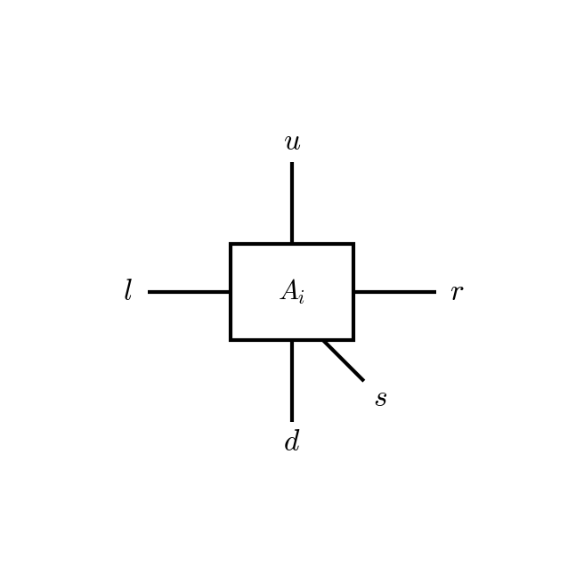
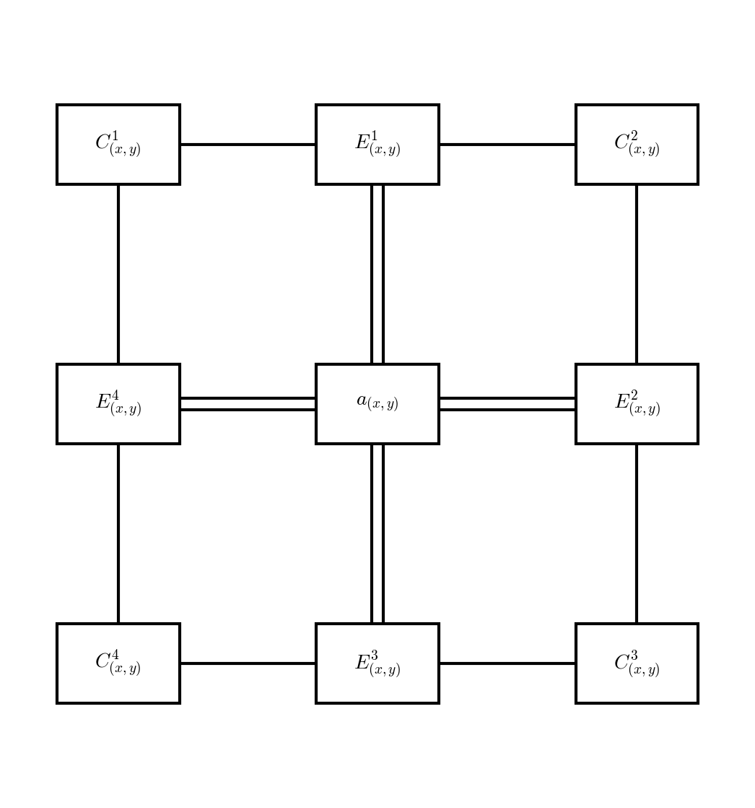

Methods
This section describes the theoretical background of the algorithms implemented in Ace-TN. We follow the notation established in [Richards2025]. For a comprehensive review of tensor network methods see [Orus2014], [Cirac2021].
iPEPS Ansatz
The infinite projected entangled-pair state (iPEPS) ansatz approximates an infinite two-dimensional quantum many-body state through a periodic tensor network [Verstraete2004], [Jordan2008]. Each site \(i\) of the square lattice is associated with a rank-5 site tensor \(A^{[s_i]}_{l_i u_i r_i d_i}\) carrying a physical index \(s_i\) of dimension \(d\) and four bond indices \(l_i, u_i, r_i, d_i\) each of dimension \(D\):
{kind=link}
The bond dimension \(D\) controls the amount of entanglement captured by the ansatz, with \(D = 1\) corresponding to a product state. Increasing \(D\) systematically improves the approximation.
Double-Layer Tensor
Expectation values require contracting the tensor-network state with its conjugate, forming a double-layer tensor network. The double-layer tensor at site \(i\) is obtained by contracting \(A_i\) with \(A^\dagger_i\) over the physical index and fusing pairs of bond indices:
Diagrammatically, the ket and bra layers are contracted over the physical index \(s_i\) and each pair of bond indices is fused into a single leg of dimension \(D^2\):

Boundary Tensor Approximation
The infinite double-layer network cannot be contracted exactly. It is approximated by boundary tensors surrounding each site: corner transfer matrices \(C^k_i\) (rank-2) and edge tensors \(E^k_i\) (rank-3) for \(k = 1,2,3,4\) [Nishino1996], [Orus2009]. The environment of a site is then approximated by the finite arrangement:
{kind=link}
Here \(C^k\) are rank-2 corner tensors and \(E^k\) are rank-3 edge tensors. Each corner carries two boundary bonds of dimension \(\chi\), and each edge carries two boundary bonds and one double-layer bond. The boundary tensors encode the effect of the infinite lattice surrounding each site. Their computation is the task of the CTMRG algorithm.
References
Verstraete and J. I. Cirac, Renormalization algorithms for quantum-many body systems in two and higher dimensions, arXiv:cond-mat/0407066 (2004).
Jordan, R. Orús, G. Vidal, F. Verstraete, and J. I. Cirac, Classical simulation of infinite-size quantum lattice systems in two spatial dimensions, Phys. Rev. Lett. 101, 250602 (2008).
Nishino and K. Okunishi, Corner transfer matrix renormalization group method, J. Phys. Soc. Jpn. 65, 891 (1996).
Orús and G. Vidal, Simulation of two-dimensional quantum systems on an infinite lattice revisited: Corner transfer matrix for tensor contraction, Phys. Rev. B 80, 094403 (2009).
Orús, A practical introduction to tensor networks: Matrix product states and projected entangled pair states, Annals of Physics 349, 117 (2014).
Cirac, D. Pérez-García, N. Schuch, and F. Verstraete, Matrix product states and projected entangled pair states: Concepts, symmetries, theorems, Rev. Mod. Phys. 93, 045003 (2021).
Richards and E. S. Sørensen, Ace-TN: GPU-Accelerated Corner-Transfer-Matrix Renormalization of Infinite Projected Entangled-Pair States, arXiv:2503.13900 (2025).